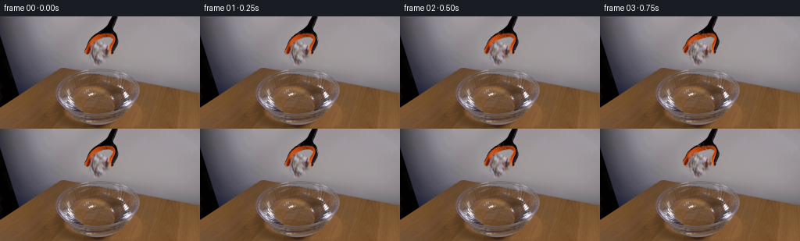
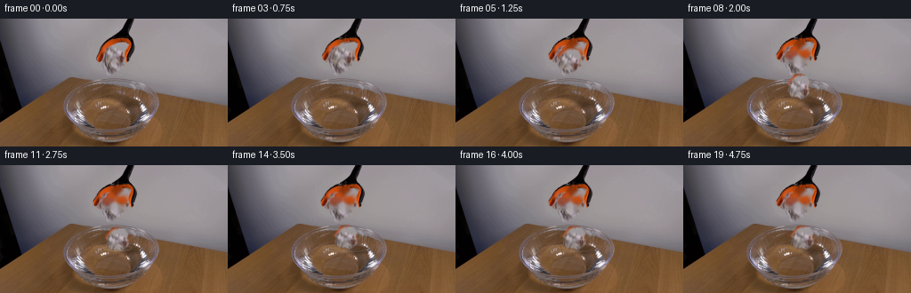
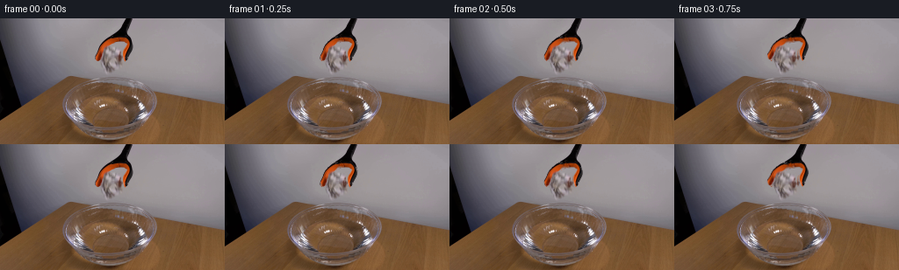

CODING AGENTS AS PIXEL WORLD MODELS
traex/GPT-5.6-Sol · 0135
点击播放 · 原生 RGB 像素
逐轮保存的候选
回放视频、检查图与代码变化。
每份候选均可单独播放。实际图片检查记录在下方工具轨迹中。
候选 01播放与检查图
点击播放 · 原生 RGB 像素

展开代码变化
--- 上一保存版本
+++ 本次保存版本
@@ -0,0 +1,245 @@
+"""Deterministic image-space animation for the supplied scientific demonstration.
+
+Only the supplied first frame is used. Small foreground elements are separated
+with analytic masks; the locked-off photographic background is retained.
+"""
+from pathlib import Path
+import cv2
+import numpy as np
+from PIL import Image
+import artifact_io
+
+ROOT = Path(__file__).resolve().parent
+H, W = 144, 256
+
+
+def feather(mask, sigma=0.65):
+ m = mask.astype(np.float32)
+ if sigma:
+ m = cv2.GaussianBlur(m, (0, 0), sigma)
+ return np.clip(m, 0.0, 1.0)
+
+
+def poly_mask(points, blur=0.0):
+ m = np.zeros((H, W), np.uint8)
+ cv2.fillPoly(m, [np.array(points, np.int32)], 255, lineType=cv2.LINE_AA)
+ m = m.astype(np.float32) / 255.0
+ return feather(m, blur) if blur else m
+
+
+def alpha_over(dst, src, alpha):
+ a = np.clip(alpha, 0, 1)[..., None]
+ return np.clip(dst.astype(np.float32) * (1-a) + src.astype(np.float32) * a, 0, 255).astype(np.uint8)
+
+
+def warp_layer(rgb, alpha, M):
+ wrgb = cv2.warpAffine(rgb, M, (W, H), flags=cv2.INTER_CUBIC,
+ borderMode=cv2.BORDER_CONSTANT, borderValue=(0, 0, 0))
+ wa = cv2.warpAffine(alpha, M, (W, H), flags=cv2.INTER_CUBIC,
+ borderMode=cv2.BORDER_CONSTANT, borderValue=0)
+ return wrgb, np.clip(wa, 0, 1)
+
+
+def paper_transform(rgb, alpha, center, angle, sx=1.0, sy=1.0):
+ """Move the original paper while retaining its photographic texture."""
+ source_center = np.array([129.5, 38.5], np.float32)
+ a = np.deg2rad(angle)
+ # Rotation in image coordinates, with independent final squash.
+ A = np.array([[np.cos(a)*sx, np.sin(a)*sx],
+ [-np.sin(a)*sy, np.cos(a)*sy]], np.float32)
+ target = np.array(center, np.float32)
+ M = np.zeros((2, 3), np.float32)
+ M[:, :2] = A
+ M[:, 2] = target - A @ source_center
+ return warp_layer(rgb, alpha, M)
+
+
+def jaw_transform(rgb, alpha, pivot, angle, shift_x):
+ M = cv2.getRotationMatrix2D(pivot, angle, 1.0).astype(np.float32)
+ M[0, 2] += shift_x
+ return warp_layer(rgb, alpha, M)
+
+
+def ellipse_stroke(cx, cy, ax, ay, start=0, end=360, thickness=1, blur=.25):
+ m = np.zeros((H, W), np.uint8)
+ cv2.ellipse(m, (int(round(cx)), int(round(cy))),
+ (max(1, int(round(ax))), max(1, int(round(ay)))),
+ 0, start, end, 255, thickness, cv2.LINE_AA)
+ out = m.astype(np.float32)/255.0
+ if blur:
+ out = cv2.GaussianBlur(out, (0, 0), blur)
+ return np.clip(out, 0, 1)
+
+
+def tint(frame, mask, color, amount=1.0):
+ a = np.clip(mask * amount, 0, 1)[..., None]
+ out = frame.astype(np.float32)*(1-a) + np.array(color, np.float32)*a
+ return np.clip(out, 0, 255).astype(np.uint8)
+
+
+def main():
+ original = np.asarray(Image.open(ROOT/'first_frame.png').convert('RGB'), dtype=np.uint8)
+ assert original.shape == (H, W, 3)
+
+ # The crumpled paper lies between the two orange jaws. The slightly
+ # asymmetric contour keeps the cutout organic rather than rectangular.
+ paper_alpha = poly_mask([
+ (125, 25), (132, 25), (138, 28), (141, 34), (139, 39),
+ (141, 44), (137, 49), (132, 52), (126, 49), (121, 50),
+ (117, 44), (119, 39), (117, 35), (121, 30)
+ ], .62)
+
+ # Masks for the two lower clamp cheeks. Restrict broad polygons using
+ # warm/dark foreground chroma so the neutral wall does not move with them.
+ rgb = original.astype(np.int16)
+ warm_dark = ((rgb[..., 0] - rgb[..., 1] > 13) |
+ (np.max(rgb, axis=2) < 91)).astype(np.float32)
+ left_region = poly_mask([(119,19),(129,23),(125,29),(122,37),(123,46),
+ (118,50),(111,47),(108,40),(110,29),(115,22)], 0)
+ right_region = poly_mask([(132,19),(141,20),(147,25),(150,32),(148,45),
+ (143,50),(137,46),(139,38),(138,29)], 0)
+ left_alpha = feather(left_region * warm_dark, .55)
+ right_alpha = feather(right_region * warm_dark, .55)
+ # Preserve the most saturated orange even on bright antialiased edges.
+ orange = ((rgb[...,0] > 115) & (rgb[...,0] > rgb[...,1]*1.32) &
+ (rgb[...,1] > rgb[...,2]*1.04)).astype(np.float32)
+ left_alpha = np.maximum(left_alpha, feather(left_region*orange, .45))
+ right_alpha = np.maximum(right_alpha, feather(right_region*orange, .45))
+
+ # Inpaint only occluded patches. This recovers the quiet neutral wall
+ # behind the falling paper and the tiny areas exposed by opening jaws.
+ paper_hard = (paper_alpha > .08).astype(np.uint8)*255
+ jaws_hard = ((left_alpha + right_alpha) > .08).astype(np.uint8)*255
+ bg_no_paper = cv2.inpaint(original, paper_hard, 4, cv2.INPAINT_TELEA)
+ bg_no_jaws = cv2.inpaint(original, jaws_hard, 4, cv2.INPAINT_TELEA)
+ bg_clear = cv2.inpaint(bg_no_paper, jaws_hard, 4, cv2.INPAINT_TELEA)
+
+ frames = []
+ for i in range(20):
+ if i == 0:
+ frames.append(original.copy())
+ continue
+
+ # The grip opens over roughly one second and remains open thereafter.
+ op = np.clip((i - .7)/3.8, 0, 1)
+ op = op*op*(3-2*op)
+
+ # The paper remains pinched for the first three samples, then falls.
+ if i <= 3:
+ frame = bg_no_jaws.copy()
+ else:
+ frame = bg_clear.copy()
+
+ # Falling-paper centre and attitude. Motion is sampled at constant
+ # 4 fps; accelerating positions communicate gravity clearly.
+ if i <= 3:
+ center = (129.5, 38.5 + .25*max(0, i-1))
+ angle = -.6*i
+ sx = sy = 1.0
+ elif i == 4:
+ center, angle, sx, sy = (129.2, 41.0), -2.5, 1.0, 1.0
+ elif i == 5:
+ center, angle, sx, sy = (128.6, 46.0), -5.0, 1.0, 1.0
+ elif i == 6:
+ center, angle, sx, sy = (128.2, 54.0), -7.2, 1.0, 1.0
+ elif i == 7:
+ center, angle, sx, sy = (128.9, 65.0), -5.2, 1.0, 1.0
+ elif i == 8:
+ center, angle, sx, sy = (130.0, 76.0), 1.5, 1.0, 1.0
+ elif i == 9: # first water contact, a small compliant squash
+ center, angle, sx, sy = (131.1, 81.5), 5.0, 1.04, .94
+ else:
+ # A light crumpled ball bobs and drifts on the surface.
+ bob = [0.9, 1.9, 1.25, .25, -.15, .2, .65, .42, .05, .20][i-10]
+ drift = [1.5, 2.0, 2.45, 2.8, 3.1, 3.45, 3.7, 3.9, 4.05, 4.15][i-10]
+ center = (130.0 + drift, 81.0 + bob)
+ angle = 5.5 + [1.5,2.5,1.7,.6,-.2,-.5,-.2,.15,.35,.2][i-10]
+ sx, sy = 1.04, .95
+
+ # A diffuse approach shadow builds on the water, then fades into the
+ # contact shadow beneath the floating paper.
+ if 5 <= i <= 9:
+ closeness = (i-4)/5
+ sh = np.zeros((H, W), np.float32)
+ cv2.ellipse(sh, (131, 94), (int(4+6*closeness), max(1,int(1+2*closeness))),
+ 0, 0, 360, .30, -1, cv2.LINE_AA)
+ sh = cv2.GaussianBlur(sh, (0,0), 2.0)
+ frame = tint(frame, sh, (56,46,42), .55)
+ elif i >= 10:
+ sh = np.zeros((H,W), np.float32)
+ cv2.ellipse(sh, (int(center[0]+1), 93), (10,3), 0, 0, 360, .18, -1, cv2.LINE_AA)
+ sh = cv2.GaussianBlur(sh, (0,0), 1.6)
+ frame = tint(frame, sh, (58,48,44), .42)
+
+ # Concentric, low-amplitude ripples from the gentle impact. Their
+ # vertical axes are shallow due to the viewing angle.
+ if i >= 9:
+ age = i-9
+ fade = max(0.0, 1.0-age/11.5)
+ r1 = 10 + age*3.15
+ r2 = max(3, r1-10)
+ m1 = ellipse_stroke(center[0], 93.0, r1, 2.3+r1*.055,
+ 4, 176, 1, .32)
+ m2 = ellipse_stroke(center[0], 93.0, r1, 2.3+r1*.055,
+ 184, 356, 1, .32)
+ frame = tint(frame, m1, (186,178,176), .32*fade)
+ frame = tint(frame, m2, (74,59,52), .18*fade)
+ if age >= 2:
+ mi = ellipse_stroke(center[0]-1, 93.0, r2, 1.7+r2*.05,
+ 8, 172, 1, .25)
+ frame = tint(frame, mi, (178,170,168), .22*fade)
+
+ # Composite the textured paper. It gradually darkens at its lower
+ # folds after wetting, while dry upper facets retain their highlights.
+ prgb, pa = paper_transform(original, paper_alpha, center, angle, sx, sy)
+ if i >= 10:
+ wet = min(1.0, (i-9)/6.0)
+ yy = np.arange(H, dtype=np.float32)[:,None]
+ lower = np.clip((yy-(center[1]-1))/10.0, 0, 1)
+ wet_a = pa * lower * (.18*wet)
+ wet_color = np.empty_like(prgb)
+ wet_color[:] = (92,82,78)
+ prgb = alpha_over(prgb, wet_color, wet_a)
+ frame = alpha_over(frame, prgb, pa)
+
+ # Minute droplets at contact; intentionally restrained for a light
+ # object rather than a heavy splash.
+ if i in (9,10):
+ dm = np.zeros((H,W), np.uint8)
+ if i == 9:
+ for x,y,r in [(119,87,1),(144,88,1),(123,84,1)]:
+ cv2.circle(dm,(x,y),r,210,-1,cv2.LINE_AA)
+ else:
+ for x,y,r in [(116,91,1),(147,91,1)]:
+ cv2.circle(dm,(x,y),r,170,-1,cv2.LINE_AA)
+ frame = tint(frame, dm.astype(np.float32)/255, (202,197,197), .45)
+
+ # Put the separated orange/black jaws last, so they naturally occlude
+ # the held paper. Opposite rotations spread their tips outward.
+ langle = -9.0*op
+ rangle = 9.0*op
+ lrgb, la = jaw_transform(original, left_alpha, (124,20), langle, -1.15*op)
+ rrgb, ra = jaw_transform(original, right_alpha, (136,20), rangle, 1.15*op)
+ frame = alpha_over(frame, lrgb, la)
+ frame = alpha_over(frame, rrgb, ra)
+
+ # A front ripple crosses the lower edge of the floating object,
+ # establishing that it rests on rather than hovers above the water.
+ if i >= 9:
+ age = i-9
+ fade = max(0.0, 1-age/12)
+ front = ellipse_stroke(center[0], 93.0, 10+age*3.15,
+ 2.3+(10+age*3.15)*.055,
+ 188, 350, 1, .25)
+ frame = tint(frame, front, (193,184,181), .25*fade)
+
+ frames.append(frame)
+
+ frames = np.stack(frames).astype(np.uint8)
+ # Contract-critical identity check.
+ assert np.array_equal(frames[0], original)
+ artifact_io.save(frames, ROOT)
+
+
+if __name__ == '__main__':
+ main()
候选 02播放与检查图
点击播放 · 原生 RGB 像素


展开代码变化
--- 上一保存版本
+++ 本次保存版本
@@ -80,6 +80,7 @@
def main():
original = np.asarray(Image.open(ROOT/'first_frame.png').convert('RGB'), dtype=np.uint8)
assert original.shape == (H, W, 3)
+ rgb = original.astype(np.int16)
# The crumpled paper lies between the two orange jaws. The slightly
# asymmetric contour keeps the cutout organic rather than rectangular.
@@ -89,9 +90,18 @@
(117, 44), (119, 39), (117, 35), (121, 30)
], .62)
+ # The paper is seen through and immediately beside the orange fingers in
+ # the source photograph. Remove the few saturated finger pixels that sit
+ # inside its irregular silhouette, borrowing adjacent neutral paper
+ # texture rather than allowing orange fragments to fall with the sheet.
+ paper_contam = (((rgb[..., 0] - rgb[..., 1] > 37) &
+ (rgb[..., 0] > rgb[..., 1] * 1.18)) |
+ (np.max(rgb, axis=2) < 47)) & (paper_alpha > .12)
+ paper_source = cv2.inpaint(original, paper_contam.astype(np.uint8)*255,
+ 3, cv2.INPAINT_TELEA)
+
# Masks for the two lower clamp cheeks. Restrict broad polygons using
# warm/dark foreground chroma so the neutral wall does not move with them.
- rgb = original.astype(np.int16)
warm_dark = ((rgb[..., 0] - rgb[..., 1] > 13) |
(np.max(rgb, axis=2) < 91)).astype(np.float32)
left_region = poly_mask([(119,19),(129,23),(125,29),(122,37),(123,46),
@@ -191,7 +201,7 @@
# Composite the textured paper. It gradually darkens at its lower
# folds after wetting, while dry upper facets retain their highlights.
- prgb, pa = paper_transform(original, paper_alpha, center, angle, sx, sy)
+ prgb, pa = paper_transform(paper_source, paper_alpha, center, angle, sx, sy)
if i >= 10:
wet = min(1.0, (i-9)/6.0)
yy = np.arange(H, dtype=np.float32)[:,None]
可观测工具轨迹
实际执行的命令与返回图片。
命令 1exit 0
/bin/bash -lc "cat prompt.txt && printf '\\n---RULES---\\n' && cat GENERATION_RULES.md"
命令 2exit 0
/bin/bash -lc "find . -maxdepth 2 -type f -printf '%p %s bytes\\n' | sort"
命令 3exit 0
/bin/bash -lc "python - <<'PY'
from PIL import Image
import numpy as np
im=np.array(Image.open('first_frame.png').convert('RGB'))
print(im.shape, im.min(),im.max(),im.mean((0,1)),im.std((0,1)))
# grid blocks avg RGB, 16x9 blocks
for by in range(9):
print('row',by, ['%02x%02x%02x'%tuple(im[by*16:(by+1)*16,bx*16:(bx+1)*16].mean((0,1)).astype(int)) for bx in range(16)])
PY
python - <<'PY'
import cv2,numpy as np
im=cv2.imread('first_frame.png')[:,:,::-1]
# kmeans pixels, K=14
x=im.reshape(-1,3).astype(np.float32)
crit=(cv2.TERM_CRITERIA_EPS+cv2.TERM_CRITERIA_MAX_ITER,50,.2)
_,lab,cen=cv2.kmeans(x,14,None,crit,5,cv2.KMEANS_PP_CENTERS)
lab=lab.reshape(im.shape[:2]); cen=cen.astype(int)
for i,c in sorted(enumerate(cen),key=lambda z:-np.sum(lab==z[0])):
ys,xs=np.where(lab==i)
print(i, tuple(c),len(xs),'bbox',xs.min(),ys.min(),xs.max(),ys.max(),'centroid',xs.mean(),ys.mean())
PY"命令 4exit 0
/bin/bash -lc "python - <<'PY'
from PIL import Image
import numpy as np
im=np.array(Image.open('first_frame.png').convert('RGB'))
# Each 2x2, classify orange O, white W, verydark #, dark d, gray ., brown b
for y in range(0,144,3):
s=''
for x in range(0,256,4):
p=im[y:y+3,x:x+4].mean((0,1)); r,g,b=p
if r>145 and r>g*1.45 and g>b*1.4: c='O'
elif r>175 and g>170 and b>170: c='W'
elif max(p)<25:c='#'
elif max(p)<55:c='D'
elif b>r*.95 and b>g*.95:c='.'
elif r>g*1.25 and g>b*1.15:c='b'
elif max(p)-min(p)<16:c=':'
else:c='-'
s+=c
print(f'{y:03}',s)
PY"命令 5exit 0
/bin/bash -lc "python - <<'PY'
import cv2,numpy as np
im=cv2.imread('first_frame.png'); rgb=im[:,:,::-1]
# masks
masks={
'orange':(rgb[:,:,0]>140)&(rgb[:,:,0]>rgb[:,:,1]*1.5)&(rgb[:,:,1]>rgb[:,:,2]*1.15),
'bright':np.min(rgb,2)>150,
'whiteNeutral':(np.min(rgb,2)>130)&((np.max(rgb,2)-np.min(rgb,2))<22),
'black':np.max(rgb,2)<35,
}
for name,m in masks.items():
n,l,st,c=cv2.connectedComponentsWithStats(m.astype('uint8'),8)
print('\\n',name, 'total',m.sum())
for i in sorted(range(1,n),key=lambda i:-st[i,4])[:20]:
if st[i,4]>=3: print(st[i].tolist(),c[i].round(1).tolist())
# save segmentation and enlarged original nearest
cv2.imwrite('.tmp/enlarged.png',cv2.resize(im,None,fx=4,fy=4,interpolation=cv2.INTER_NEAREST))
PY"命令 6exit 0
/bin/bash -lc "python - <<'PY'
from PIL import Image
import numpy as np
im=np.array(Image.open('first_frame.png').convert('RGB'))
# Print crop every 2x2 with more classes
# O orange, K black, w white, G gray, R brown, lowercase shading
for y in range(0,82,2):
s=''
for x in range(96,164,2):
p=im[y:y+2,x:x+2].mean((0,1));r,g,b=p; v=max(p); d=max(p)-min(p)
if r>140 and r>g*1.45 and g>b*1.1:c='O'
elif v<25:c='K'
elif v<55:c='k'
elif v<85:c='d'
elif d<12 and v>180:c='W'
elif d<18 and v>145:c='w'
elif d<16:c='g'
elif b>=r and b>=g:c='B'
elif r>g*1.25 and g>b*1.1:c='R'
elif r>g*1.1:c='r'
else:c='.'
s+=c
print(f'{y:02}',s)
PY"命令 7exit 0
/bin/bash -lc "python - <<'PY'
import cv2, numpy as np
im=cv2.imread('first_frame.png'); g=cv2.cvtColor(im,cv2.COLOR_BGR2GRAY)
e=cv2.Sobel(g,cv2.CV_32F,1,0)**2+cv2.Sobel(g,cv2.CV_32F,0,1)**2
for y in range(55,141,2):
row=np.sqrt(e[y:y+2]).mean(0)
# runs where >90
xs=np.where(row>90)[0]
print(y, 'energy',round(row.mean()), 'peaks',xs[::max(1,len(xs)//12)].tolist())
PY"命令 8exit 0
/bin/bash -lc "python - <<'PY'
from PIL import Image
import numpy as np
im=np.array(Image.open('first_frame.png'))
# block avg 3x3 report for x104-152 y18-68, with rgb tuples compact every 4
for y in range(18,69,4):
print('\\ny',y)
for x in range(104,153,4):
p=im[y:y+4,x:x+4].mean((0,1)).astype(int)
print(f'{x}:{p[0]:02x}{p[1]:02x}{p[2]:02x}',end=' ')
print()
PY"命令 9exit 0
/bin/bash -lc "python - <<'PY'
import cv2,numpy as np
im=cv2.imread('first_frame.png'); g=cv2.cvtColor(im,cv2.COLOR_BGR2GRAY)
sx=cv2.Sobel(g,cv2.CV_32F,1,0); sy=cv2.Sobel(g,cv2.CV_32F,0,1); mag=np.hypot(sx,sy)
# 2x2 block edge chars x56..200
chars=' .:-=+*#%@'
for y in range(58,125,2):
s=''
for x in range(56,201,2):
v=mag[y:y+2,x:x+2].mean()
s+=chars[min(9,int(v/35))]
print(f'{y:03} {s}')
PY"命令 10exit 0
/bin/bash -lc "python - <<'PY'
from PIL import Image
import numpy as np
im=np.array(Image.open('first_frame.png'))
for x in [60,70,80,90,100,110,120,128,136,145,155,165,175,185,195]:
print('x',x, ['%02x%02x%02x'%tuple(im[y,x]) for y in range(58,131,4)])
PY"命令 11exit 0
/bin/bash -lc "sed -n '1,240p' artifact_io.py"
命令 12exit 0
/bin/bash -lc "cat > generate.py <<'PY'
\"\"\"Deterministic image-space animation for the supplied scientific demonstration.
Only the supplied first frame is used. Small foreground elements are separated
with analytic masks; the locked-off photographic background is retained.
\"\"\"
from pathlib import Path
import cv2
import numpy as np
from PIL import Image
import artifact_io
ROOT = Path(__file__).resolve().parent
H, W = 144, 256
def feather(mask, sigma=0.65):
m = mask.astype(np.float32)
if sigma:
m = cv2.GaussianBlur(m, (0, 0), sigma)
return np.clip(m, 0.0, 1.0)
def poly_mask(points, blur=0.0):
m = np.zeros((H, W), np.uint8)
cv2.fillPoly(m, [np.array(points, np.int32)], 255, lineType=cv2.LINE_AA)
m = m.astype(np.float32) / 255.0
return feather(m, blur) if blur else m
def alpha_over(dst, src, alpha):
a = np.clip(alpha, 0, 1)[..., None]
return np.clip(dst.astype(np.float32) * (1-a) + src.astype(np.float32) * a, 0, 255).astype(np.uint8)
def warp_layer(rgb, alpha, M):
wrgb = cv2.warpAffine(rgb, M, (W, H), flags=cv2.INTER_CUBIC,
borderMode=cv2.BORDER_CONSTANT, borderValue=(0, 0, 0))
wa = cv2.warpAffine(alpha, M, (W, H), flags=cv2.INTER_CUBIC,
borderMode=cv2.BORDER_CONSTANT, borderValue=0)
return wrgb, np.clip(wa, 0, 1)
def paper_transform(rgb, alpha, center, angle, sx=1.0, sy=1.0):
\"\"\"Move the original paper while retaining its photographic texture.\"\"\"
source_center = np.array([129.5, 38.5], np.float32)
a = np.deg2rad(angle)
# Rotation in image coordinates, with independent final squash.
A = np.array([[np.cos(a)*sx, np.sin(a)*sx],
[-np.sin(a)*sy, np.cos(a)*sy]], np.float32)
target = np.array(center, np.float32)
M = np.zeros((2, 3), np.float32)
M[:, :2] = A
M[:, 2] = target - A @ source_center
return warp_layer(rgb, alpha, M)
def jaw_transform(rgb, alpha, pivot, angle, shift_x):
M = cv2.getRotationMatrix2D(pivot, angle, 1.0).astype(np.float32)
M[0, 2] += shift_x
return warp_layer(rgb, alpha, M)
def ellipse_stroke(cx, cy, ax, ay, start=0, end=360, thickness=1, blur=.25):
m = np.zeros((H, W), np.uint8)
cv2.ellipse(m, (int(round(cx)), int(round(cy))),
(max(1, int(round(ax))), max(1, int(round(ay)))),
0, start, end, 255, thickness, cv2.LINE_AA)
out = m.astype(np.float32)/255.0
if blur:
out = cv2.GaussianBlur(out, (0, 0), blur)
return np.clip(out, 0, 1)
def tint(frame, mask, color, amount=1.0):
a = np.clip(mask * amount, 0, 1)[..., None]
out = frame.astype(np.float32)*(1-a) + np.array(color, np.float32)*a
return np.clip(out, 0, 255).astype(np.uint8)
def main():
original = np.asarray(Image.open(ROOT/'first_frame.png').convert('RGB'), dtype=np.uint8)
assert original.shape == (H, W, 3)
# The crumpled paper lies between the two orange jaws. The slightly
# asymmetric contour keeps the cutout organic rather than rectangular.
paper_alpha = poly_mask([
(125, 25), (132, 25), (138, 28), (141, 34), (139, 39),
(141, 44), (137, 49), (132, 52), (126, 49), (121, 50),
(117, 44), (119, 39), (117, 35), (121, 30)
], .62)
# Masks for the two lower clamp cheeks. Restrict broad polygons using
# warm/dark foreground chroma so the neutral wall does not move with them.
rgb = original.astype(np.int16)
warm_dark = ((rgb[..., 0] - rgb[..., 1] > 13) |
(np.max(rgb, axis=2) < 91)).astype(np.float32)
left_region = poly_mask([(119,19),(129,23),(125,29),(122,37),(123,46),
(118,50),(111,47),(108,40),(110,29),(115,22)], 0)
right_region = poly_mask([(132,19),(141,20),(147,25),(150,32),(148,45),
(143,50),(137,46),(139,38),(138,29)], 0)
left_alpha = feather(left_region * warm_dark, .55)
right_alpha = feather(right_region * warm_dark, .55)
# Preserve the most saturated orange even on bright antialiased edges.
orange = ((rgb[...,0] > 115) & (rgb[...,0] > rgb[...,1]*1.32) &
(rgb[...,1] > rgb[...,2]*1.04)).astype(np.float32)
left_alpha = np.maximum(left_alpha, feather(left_region*orange, .45))
right_alpha = np.maximum(right_alpha, feather(right_region*orange, .45))
# Inpaint only occluded patches. This recovers the quiet neutral wall
# behind the falling paper and the tiny areas exposed by opening jaws.
paper_hard = (paper_alpha > .08).astype(np.uint8)*255
jaws_hard = ((left_alpha + right_alpha) > .08).astype(np.uint8)*255
bg_no_paper = cv2.inpaint(original, paper_hard, 4, cv2.INPAINT_TELEA)
bg_no_jaws = cv2.inpaint(original, jaws_hard, 4, cv2.INPAINT_TELEA)
bg_clear = cv2.inpaint(bg_no_paper, jaws_hard, 4, cv2.INPAINT_TELEA)
frames = []
for i in range(20):
if i == 0:
frames.append(original.copy())
continue
# The grip opens over roughly one second and remains open thereafter.
op = np.clip((i - .7)/3.8, 0, 1)
op = op*op*(3-2*op)
# The paper remains pinched for the first three samples, then falls.
if i <= 3:
frame = bg_no_jaws.copy()
else:
frame = bg_clear.copy()
# Falling-paper centre and attitude. Motion is sampled at constant
# 4 fps; accelerating positions communicate gravity clearly.
if i <= 3:
center = (129.5, 38.5 + .25*max(0, i-1))
angle = -.6*i
sx = sy = 1.0
elif i == 4:
center, angle, sx, sy = (129.2, 41.0), -2.5, 1.0, 1.0
elif i == 5:
center, angle, sx, sy = (128.6, 46.0), -5.0, 1.0, 1.0
elif i == 6:
center, angle, sx, sy = (128.2, 54.0), -7.2, 1.0, 1.0
elif i == 7:
center, angle, sx, sy = (128.9, 65.0), -5.2, 1.0, 1.0
elif i == 8:
center, angle, sx, sy = (130.0, 76.0), 1.5, 1.0, 1.0
elif i == 9: # first water contact, a small compliant squash
center, angle, sx, sy = (131.1, 81.5), 5.0, 1.04, .94
else:
# A light crumpled ball bobs and drifts on the surface.
bob = [0.9, 1.9, 1.25, .25, -.15, .2, .65, .42, .05, .20][i-10]
drift = [1.5, 2.0, 2.45, 2.8, 3.1, 3.45, 3.7, 3.9, 4.05, 4.15][i-10]
center = (130.0 + drift, 81.0 + bob)
angle = 5.5 + [1.5,2.5,1.7,.6,-.2,-.5,-.2,.15,.35,.2][i-10]
sx, sy = 1.04, .95
# A diffuse approach shadow builds on the water, then fades into the
# contact shadow beneath the floating paper.
if 5 <= i <= 9:
closeness = (i-4)/5
sh = np.zeros((H, W), np.float32)
cv2.ellipse(sh, (131, 94), (int(4+6*closeness), max(1,int(1+2*closeness))),
0, 0, 360, .30, -1, cv2.LINE_AA)
sh = cv2.GaussianBlur(sh, (0,0), 2.0)
frame = tint(frame, sh, (56,46,42), .55)
elif i >= 10:
sh = np.zeros((H,W), np.float32)
cv2.ellipse(sh, (int(center[0]+1), 93), (10,3), 0, 0, 360, .18, -1, cv2.LINE_AA)
sh = cv2.GaussianBlur(sh, (0,0), 1.6)
frame = tint(frame, sh, (58,48,44), .42)
# Concentric, low-amplitude ripples from the gentle impact. Their
# vertical axes are shallow due to the viewing angle.
if i >= 9:
age = i-9
fade = max(0.0, 1.0-age/11.5)
r1 = 10 + age*3.15
r2 = max(3, r1-10)
m1 = ellipse_stroke(center[0], 93.0, r1, 2.3+r1*.055,
4, 176, 1, .32)
m2 = ellipse_stroke(center[0], 93.0, r1, 2.3+r1*.055,
184, 356, 1, .32)
frame = tint(frame, m1, (186,178,176), .32*fade)
frame = tint(frame, m2, (74,59,52), .18*fade)
if age >= 2:
mi = ellipse_stroke(center[0]-1, 93.0, r2, 1.7+r2*.05,
8, 172, 1, .25)
frame = tint(frame, mi, (178,170,168), .22*fade)
# Composite the textured paper. It gradually darkens at its lower
# folds after wetting, while dry upper facets retain their highlights.
prgb, pa = paper_transform(original, paper_alpha, center, angle, sx, sy)
if i >= 10:
wet = min(1.0, (i-9)/6.0)
yy = np.arange(H, dtype=np.float32)[:,None]
lower = np.clip((yy-(center[1]-1))/10.0, 0, 1)
wet_a = pa * lower * (.18*wet)
wet_color = np.empty_like(prgb)
wet_color[:] = (92,82,78)
prgb = alpha_over(prgb, wet_color, wet_a)
frame = alpha_over(frame, prgb, pa)
# Minute droplets at contact; intentionally restrained for a light
# object rather than a heavy splash.
if i in (9,10):
dm = np.zeros((H,W), np.uint8)
if i == 9:
for x,y,r in [(119,87,1),(144,88,1),(123,84,1)]:
cv2.circle(dm,(x,y),r,210,-1,cv2.LINE_AA)
else:
for x,y,r in [(116,91,1),(147,91,1)]:
cv2.circle(dm,(x,y),r,170,-1,cv2.LINE_AA)
frame = tint(frame, dm.astype(np.float32)/255, (202,197,197), .45)
# Put the separated orange/black jaws last, so they naturally occlude
# the held paper. Opposite rotations spread their tips outward.
langle = -9.0*op
rangle = 9.0*op
lrgb, la = jaw_transform(original, left_alpha, (124,20), langle, -1.15*op)
rrgb, ra = jaw_transform(original, right_alpha, (136,20), rangle, 1.15*op)
frame = alpha_over(frame, lrgb, la)
frame = alpha_over(frame, rrgb, ra)
# A front ripple crosses the lower edge of the floating object,
# establishing that it rests on rather than hovers above the water.
if i >= 9:
age = i-9
fade = max(0.0, 1-age/12)
front = ellipse_stroke(center[0], 93.0, 10+age*3.15,
2.3+(10+age*3.15)*.055,
188, 350, 1, .25)
frame = tint(frame, front, (193,184,181), .25*fade)
frames.append(frame)
frames = np.stack(frames).astype(np.uint8)
# Contract-critical identity check.
assert np.array_equal(frames[0], original)
artifact_io.save(frames, ROOT)
if __name__ == '__main__':
main()
PY
python generate.py
python - <<'PY'
import numpy as np
from PIL import Image
z=np.load('pixels.npz')['pixels']
print('pixels',z.shape,z.dtype,'first exact',np.array_equal(np.array(Image.open('frames/00.png')),np.array(Image.open('first_frame.png'))))
for i in range(1,20):
a=np.array(Image.open(f'frames/{i:02d}.png')); b=np.array(Image.open(f'frames/{i-1:02d}.png'))
d=np.abs(a.astype(int)-b.astype(int)); print(i,'changed',np.any(d,2).sum(),'mean',round(d.mean(),3),'max',d.max())
PY"命令 13exit 0
/bin/bash -lc "python - <<'PY'
from PIL import Image
import numpy as np
for i in [0,3,4,6,8,9,12,19]:
a=np.array(Image.open(f'frames/{i:02d}.png'))
m=(a[:,:,0]>115)&(a[:,:,0]>a[:,:,1]*1.32)&(a[:,:,1]>a[:,:,2]*1.04)
ys,xs=np.where(m)
print(i, 'orange total',m.sum(),'below55',m[55:].sum(),'bbox', (xs.min(),ys.min(),xs.max(),ys.max()))
PY"命令 14exit 0
/bin/bash -lc "sed -n '72,130p' generate.py"
命令 15exit 0
/bin/bash -lc "python generate.py && python -m py_compile generate.py && python - <<'PY'
from pathlib import Path
from PIL import Image
import numpy as np
fs=sorted(Path('frames').glob('*.png'))
assert len(fs)==20
ims=np.stack([np.array(Image.open(p).convert('RGB')) for p in fs])
assert ims.shape==(20,144,256,3) and ims.dtype==np.uint8
assert np.array_equal(ims[0],np.array(Image.open('first_frame.png').convert('RGB')))
# report temporal centroid of changes to frame 0
base=ims[0].astype(int)
for i in [0,3,5,7,9,12,16,19]:
d=np.max(abs(ims[i].astype(int)-base),2)>15
y,x=np.where(d)
print(i,d.sum(), (round(x.mean(),1),round(y.mean(),1)) if len(x) else '-')
print('artifacts',[(p.name,p.stat().st_size) for p in [Path('pixels.npz'),Path('inspection.png'),Path('index.html')]])
PY"保存候选 2 份；完成命令 15 次；可验证图片返回 0 张。原始 API 响应与完整日志保留在本地。